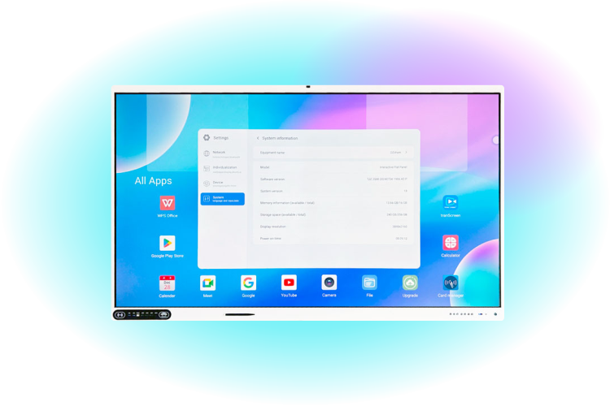

10 Veces Más Potente que Pantallas Tradicionales, Procesador RK3588 de última generación. Rendimiento superior para educación moderna con inteligencia artificial integrada que transforma la experiencia de enseñanza y aprendizaje.

Ve en acción el poder del procesador RK3588. Tecnología de 8 núcleos con IA integrada, colaboración en tiempo real y todas las herramientas para transformar tu aula.